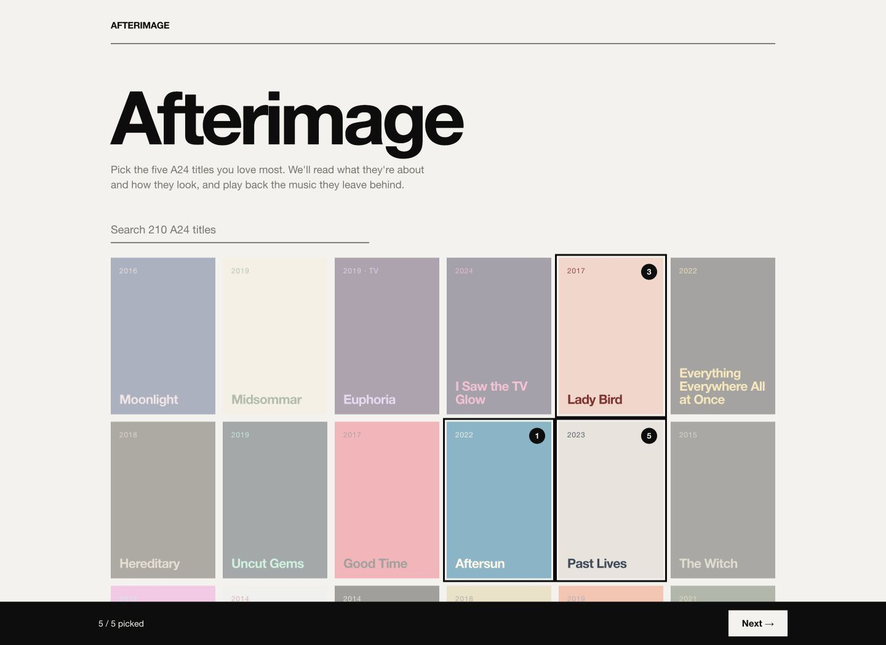
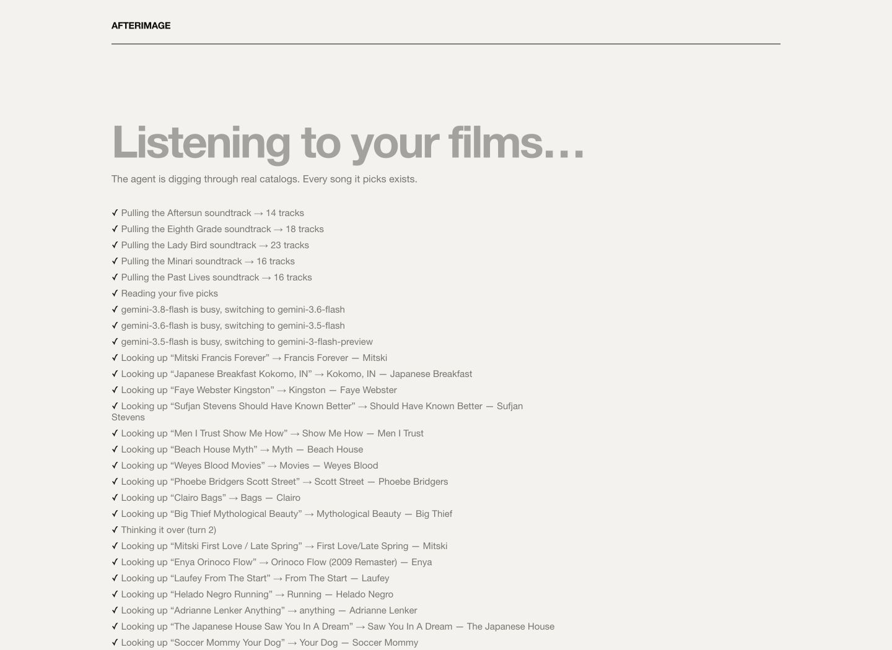
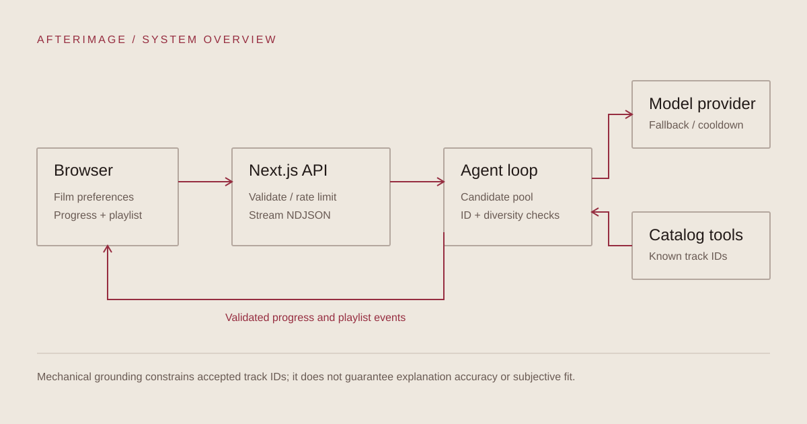

Synopsis
Who it's for. A24 fans who want the music their favorite films leave behind. You pick a few films, and the agent recommends a 15-track playlist that fits the films' mood and themes, not their soundtracks. For example, Pearl is about female rage and wanting to be seen, and The Witch is about decay and pressure.
What I built. I built it on my own: the Next.js app, the tool-use agent and a real-fan evaluation set.
- Film picker: choose 5 of 210 A24 films, and optionally answer when you usually listen to music and what song you've had on repeat.
- Tool-use agent: decides what to search and which similar artists to explore, over multiple rounds of Deezer catalog tools.
- Live progress: shows what the agent is doing, then streams in a taste profile and 15 tracks.
- Grounded picks: every track comes from a real catalog result, checked in code.
- Each track explained: a reason and the signal it came from (themes, look, your answers, score or bridge), with previews and a shareable card.
The results.
- 0 made-up tracks: the model can only pick track IDs that the tools returned.
- Under 0.1 seconds for repeated requests, with result caching.
- One fewer model turn by prefetching soundtracks on the server.



Engineering

Define a good pick
A good pick fits a film's core and imagery, not its soundtrack. It should also fit the taste of A24's young audience, so the agent favors artists from after 2015 by default. The prompt ranks the signals: themes first, then the look, then your answers, then the score, plus a bridge. Every track is labeled with the signal it came from. The prompt never names an artist, so it can't leak the answers.
Search like a listener
The agent first sums up the themes and look the films share. Then it sends 8 to 10 searches in parallel in one round. It uses related artists and artist top tracks to move past the soundtracks and find new artists with the same mood. Every result goes into a candidate pool.
Only pick songs the tools returned
In my first version, the model listed 18 songs in one call, and I verified them afterwards. Some songs didn't exist or were the wrong version. So now the model can only pick IDs that the tools returned. The backend checks each pick: it must be in the candidate pool, with at most 2 tracks per artist and at most 2 soundtrack tracks. Picks that fail are dropped, and the model has to fill the list to 15.
Stream the playlist line by line
Gemini doesn't stream tool-call arguments, so returning the playlist through a tool would mean waiting until all of it is generated. Instead, the model writes one JSON line per item: first the taste profile, then 15 tracks. The backend checks each line as it arrives, and the page shows it right away. The user sees the whole chain: reading the films, searching and picking songs.
Make it faster without hurting quality
I measured where the time goes: mostly in each model call. So I made the changes that don't affect quality first. The server prefetches each film's soundtrack album from Deezer and puts it in the first message, which saves one model turn. Results are cached for 24 hours, so a repeated request returns in under 0.1 seconds. Changes that could affect quality are experiment switches.
Choose tools that fit an agent
Deezer needs no key and allows 50 calls every 5 seconds. iTunes allows about 20 a minute, which would stall the agent, and from 2026 the Spotify API can't read other people's playlists. I used Next.js route handlers instead of a separate backend: every model is an API call, so the frontend and backend share one TypeScript codebase. I documented the decisions in a design doc, 19 ADRs, a model card, a system card and a datasheet.
Build a real-fan dataset
There was no ready-made dataset, so I built one from real fans: 21 film-to-music lists with 253 artists, from Spotify fan playlists, YouTube playlist videos, Reddit and blogs. I removed each film's composer and soundtrack artists, so it tests mood, not guessing the soundtrack. I split it into 12 dev and 9 test items. Experiments compare on dev only, and the test set runs once at the end.
To score taste, I calibrated an LLM judge from a different model family, Gemma, so the model doesn't grade itself. It reached an AUC of 0.77 on dev, above the 0.7 bar I set in advance.
Results
Every pick comes from a real catalog result, so the agent made up 0 tracks. Picks driven by the films' themes matched fans more often than picks driven by their soundtracks, which supports the project's main idea. Two fans' playlists for the same film often share no artists at all, so matching any one fan is hard by nature. 9 offline regression tests pass.
Next
Run the remaining experiments, then score the test set once.